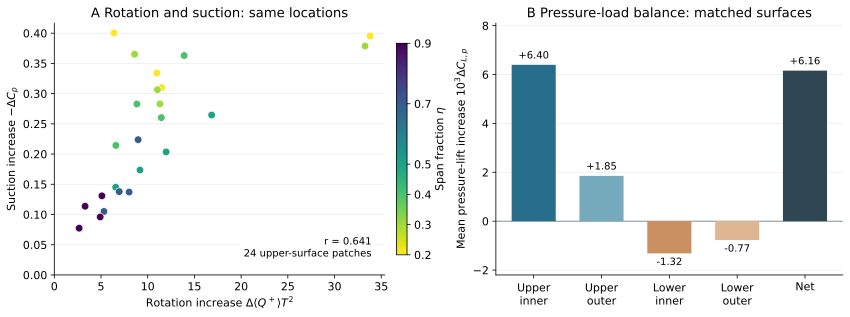

历史报告快照；部分判断后续已更新。请先阅读最新总报告。原始数据附件保留本地，本合集不包含数据或论文全文。
Sweep35 · 2026-10-22 · 精简报告
Orca 胸鳍的增升来自哪里？
数据支持的机制：身体与摆动胸鳍的相互作用强化了内侧上方的旋转流动，对应更强的上表面吸力；该吸力通过压力积分产生主要正增升，下表面压力降低抵消一部分。
全胸鳍平均压力升力：baseline / isolated = 1.596，增加 59.6%；静态比值为 1.105，增益明显较小，但并非严格为零。

图 A：同一截面位置的周期平均旋转增量与吸力增量，颜色表示展向位置。图 B：双鳍完全匹配表面的压力增量收支；内／外侧按 60% 展长划分。B 使用共同表面，面积覆盖约 91%–93%，因此净增量与上文全鳍比值的统计范围不同。
旋转增强对应吸力增强。24 个上侧区域的平均空间相关为 r = 0.641；改变采样带宽和近壁排除层数后仍为 0.539–0.687。对应主要集中于内展向。逐相位、逐小区域的对应较弱（r = 0.295），因此这支持平均机制关联，不代表每一点都即时同步。
上表面吸力提供主要正增升。压力积分给出上侧 +0.008248、下侧 -0.002090，净 ΔCL,p = +0.006158。其中内侧上表面占上侧正增量的 77.5%。这是区域压力载荷收支。
摆动强化了这条联系。在 η = 0.2 截面，旋转指标的 baseline / isolated 比值，摆动时为 3.46，静态为 0.97；对应的平均吸力增量分别为 0.364、0.096。“升力放大”是响应表现，旋转流动与压力的变化提供了机制解释。